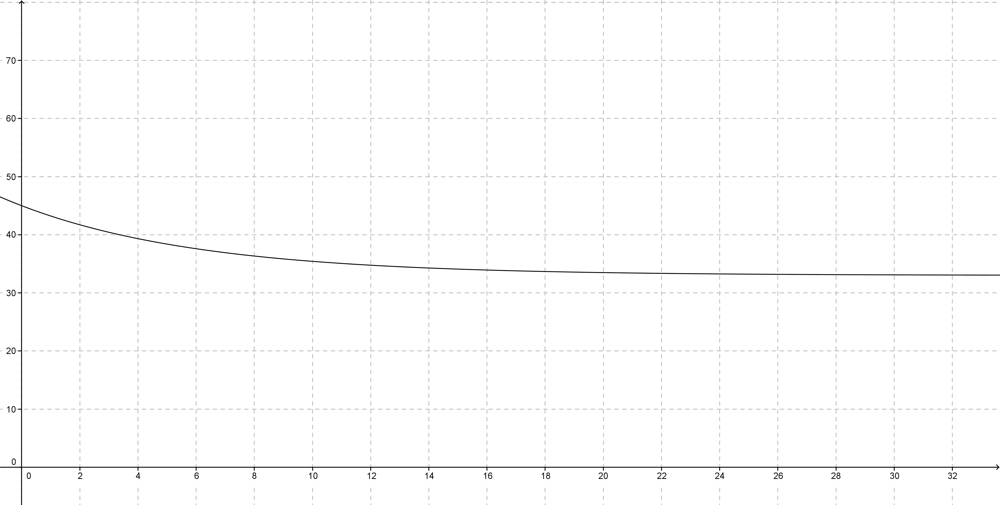
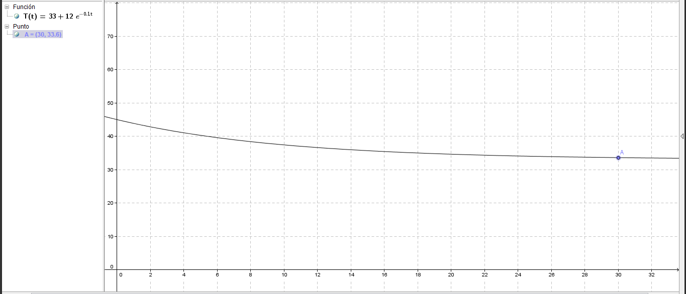
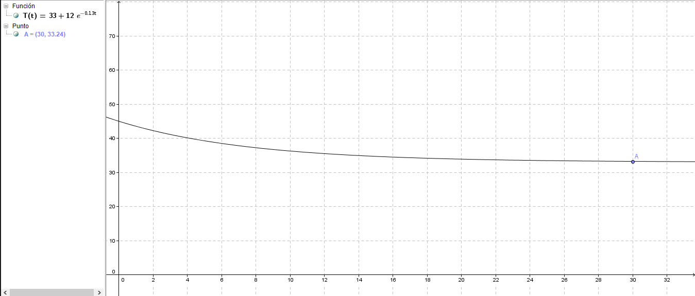
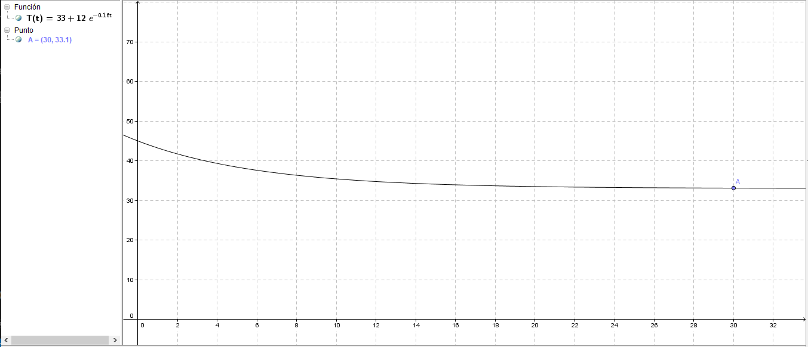

Trabajo de electricidad
El cálculo diferencial se relaciona directamente con el funcionamiento de un sistema de ventilación con sensor de temperatura porque permite analizar cómo varía la temperatura respecto al tiempo y cómo esa variación afecta el sistema. Usando derivadas, se puede determinar la velocidad de cambio de la temperatura, lo cual es útil para que el sistema responda adecuadamente por ejemplo, encendiendo o ajustando la velocidad del ventilador cuando la temperatura aumenta rápidamente.
Para comprobar la relación entre nuestro prototipo y la materia de cálculo diferencial usamos los guientes temas como base:
1. Derivada como función
2. Funciones continuas
3. Optimización
4. Primera y segunda derivada
Conclusión
Derivada como una función
Una derivada como función es una herramienta matemática que describe cómo cambia una cantidad con respecto a otra. Si tenemos una función y sacamos su derivada podremos obtener la velocidad de cambio de nuestra función
La relación con nuestro prototipo se debe a que gracias a la gráfica usada nos permite ver el momento en que la temperatura inicial(la que activa el sensor) se regula hasta la temperatura ambiente
Funciones continuas
Las funciones continuas son funciones matemáticas que no presentan 'saltos' o 'interrupciones', se pueden interpretar de forma sencilla como el dibujar una gráfica sin levantar el lápiz del papel
Su uso radica en que sirven para modelar procesos reales, por ejemplo:
- Crecimiento(poblacional, de plantas, económico, etc.)
- Movimiento o cambios de temperatura(que es los que estamos abordando aquí mismo)
- Derivadas(otro tema que abordaremos en unos momentos)
- Teoremas importantes
Las funciones continuas se relacionan con nuestro prototipo ya que a través de estas podemos determinar los cambios de temperatura del mismo
La función que utilizaremos para nuestro prototipo es la Ley de Newton de enfriamiento y calentamiento
T(t)=Tamb + (T0 - Tamb) · e-kt
Esta fución se divide de la siguiente manera:
- Temperatura ambiente (Tamb): La temperatura a la que estamos actualmente(yo usé 33°C para emplear mi función)
- Temperatura inicial (T0): La temperatura con la que se activa el sensor(para esto usé 45°C como base)
- Constante de enfriamiento(k): Esto nos permite determinar que tan rápido se regula la temperatura(si el valor es mayor, el tiempo que tarda la temperatura en regularse será menor y como aquí la temperatura decrece el valor de k es negativo. El valor que usamos aquí es -0.16 )
- Exponencial(e): Parte de la función exponencial, representa la base de los logaritmos naturales(es un número irracional como π y su valor aproximado es: 2.71828)
Obteniendo así la siguiente fórmula:
T(t)=33+(45-33) · e-0.16t
T(t)=33+12e-0.16t
Esta función nos permite determinar que tanto tarda el ventilador en llegar a la temperatura ambiente

La gráfica nos muestra como la temperatura empieza en los 45°C y con el tiempo(empezando desde el segundo 30) la temperatura se regula hasta la temperatura ambiente(33°C)
Optimización
La optimización es el proceso de mejorar un sistema para que funcione de la mejor manera posible según ciertos criterios, como eficiencia, velocidad, consumo energético, costo, etc.
Una forma más sencilla de explicarlo es el hecho de obtener el mejor valor posible para resolver un problema
La optimización está presente en nuestro prototipo ya que este proceso es necesario para obtener el valor de la constante de enfiramiento(k). El método que usamos para obtener k consiste en una serie de prueba y error en base a los datos que ya tenemos(una fórmula casi completa) y probar con diferentes valores para k, para lo cual usamos Geogebra
Considerando que la temperatura se regula a los 30 segundos(hipotéticamente hablando) empezamos a darle a k un valor de -0.1

Como se puede observar, la temperatura a los 30 segundos es de 33.6°C por lo que el valor de k es incorrecto. Intentemos con otro valor

Aquí le dimos un valor de -0.13 y la temperatura disminuyo a 33.24°C por lo que nos estamos acercando, intentemos de nuevo

Al darle un calor de -0.16 obtenemos que a los 30 segundos la temepratura llega a los 33.1°C, un valor muy cercano al original y por lo cual le dimos ese valor a k
Primera y segunda derivada
La primera derivada se relaciona con nuestro prototipo ya que esta mide la tasa de cambio de una función, es decir, qué tan rápido está cambiando el valor de la variable dependiente (en este caso, la temperatura) respecto al tiempo
Si sacamos la derivada de nuestra función:
T(t)=33+12e-0.16t
T'(t)= -1.92e-0.16t
La primera derivada es negativa, lo que indica que la temperatura está bajando con el tiempo
La segunda derivada mide cómo está cambiando la velocidad de cambio. Es decir, mide la aceleración del cambio de temperatura
Si sacamos la derivada de nuestra primera derivada derivada:
T'(t)= -1.92e-0.16t
T''(t)= 0.3072e -0.16t
Esta derivada es positiva, lo que significa que la velocidad con la que baja la temperatura disminuye: es decir, el sistema se enfría más lento con el tiempo
Conclusión
Gracias a los temas antes dedos podemos entender la razón por la cual la materia de calculo diferencial se relaciona con nuestro protoripo de sistema de ventilación con sensor de temperatura